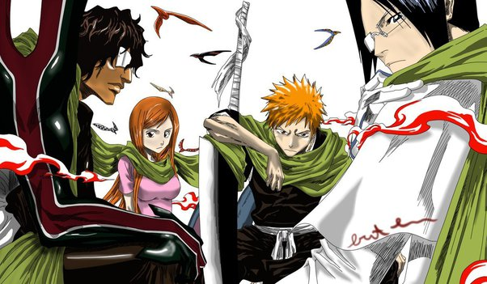
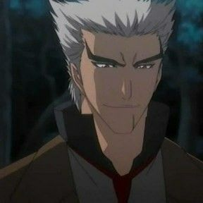
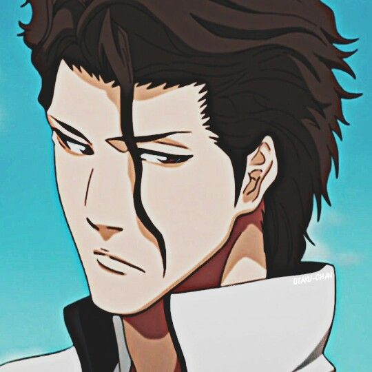
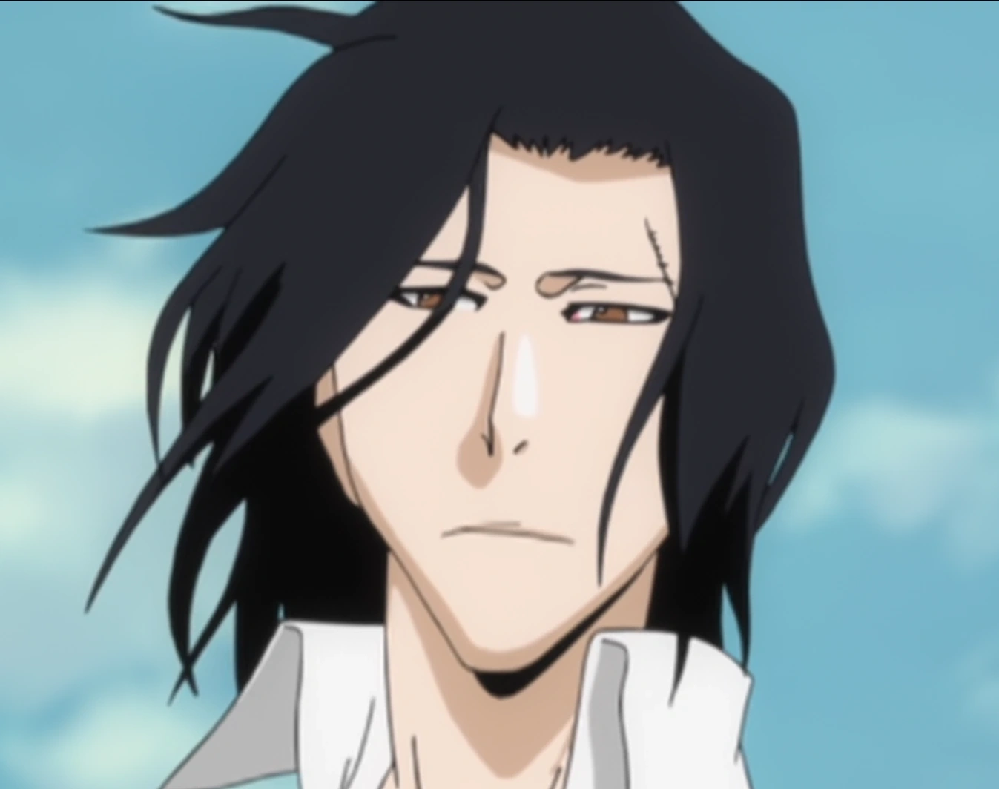
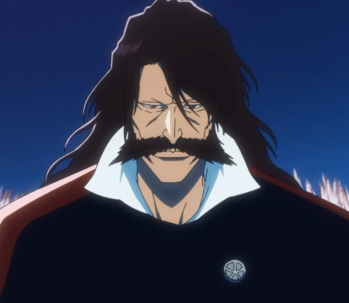

ARCOS

Agente Substituto de Shinigami
Ichigo e seus amigos invadem a Soul Society para resgatar Rukia.

Sociedade das Almas
Ichigo e seus amigos invadem a Soul Society para resgatar Rukia.

Bount
Ichigo e seus amigos invadem a Soul Society para resgatar Rukia.

Arrancar / Hueco Mundo
A luta contra os Arrancars e a ameaça dos Espadas.

Invasão de Karakura & Guerra contra Aizen
Ichigo e seus amigos invadem a Soul Society para resgatar Rukia.

Fullbringer
Ichigo e seus amigos invadem a Soul Society para resgatar Rukia.

Guerra Sangrenta dos Mil Anos
A batalha final contra os invasores Quincy e Yhwach.